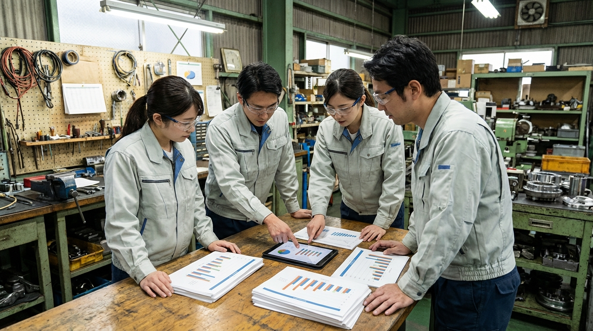
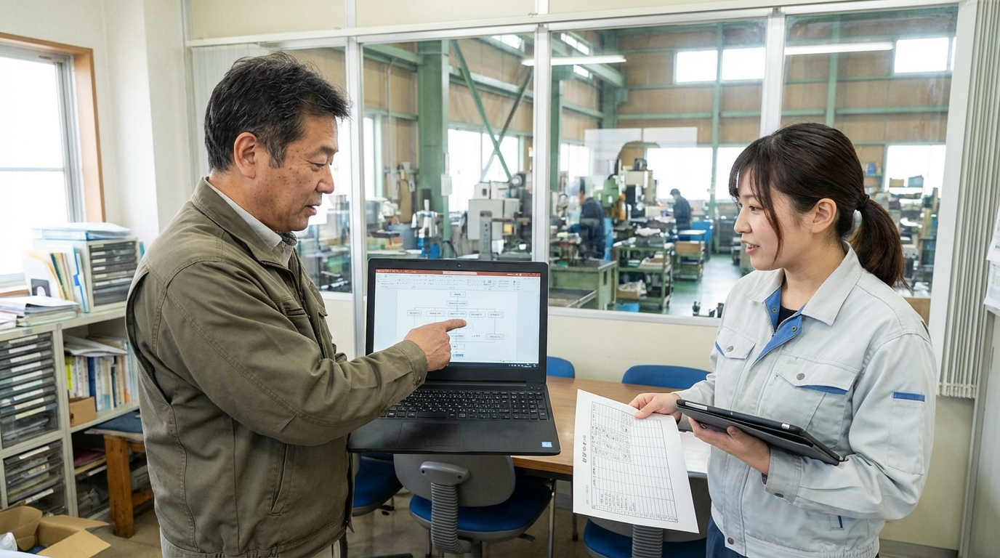
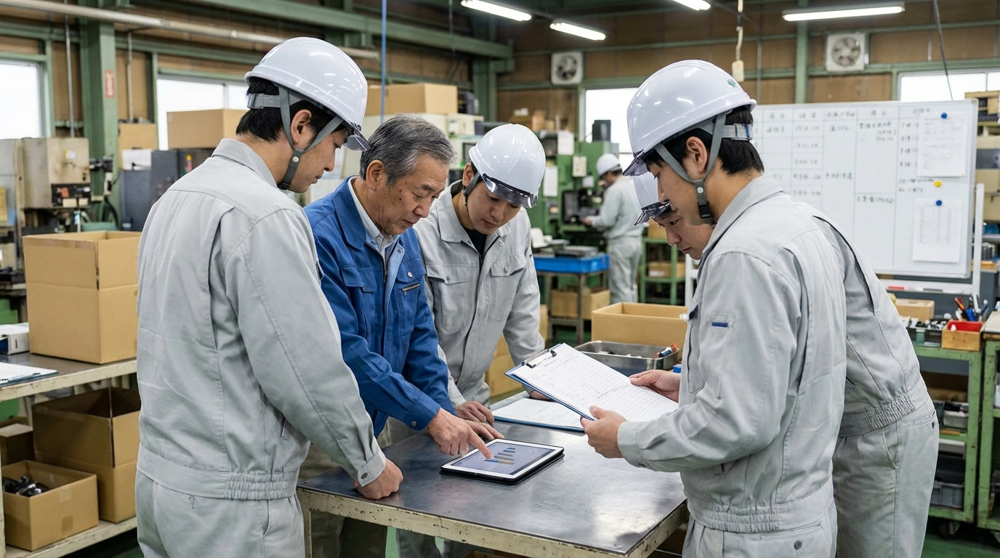

作業報告があと回しになる
現場メモをあとで文章化するため、日報や引き継ぎの入力が重くなりやすい。

製造業の記録・報告業務
作業報告・不良報告・手順書を、現場で回る形に整える伴走型 AI コンサル
AI-SABI が、課題整理から入力方法、確認フロー、定着支援まで伴走し、製造業の記録・報告業務を現場の流れに合う形へ整えます。
現場で起きやすい課題
現場メモをあとで文章化するため、日報や引き継ぎの入力が重くなりやすい。
発生状況、原因、対策のまとめ方が属人化し、品質がばらつきやすい。
改善内容が現場にはあるのに、手順書や標準書へ反映しきれない。
営業や顧客向けの説明文を都度作り直し、確認にも工数がかかる。
現場目線で変える 4 ステップ
報告、手順書、見積補足など、どこが重いかを整理します。
最初に効果が出やすい 1 業務を決めます。
AI がどこまで下書きし、誰が確認するかを設計します。
現場運用に合わせて調整し、使い続けられる状態まで伴走します。
現場目線で変える業務
現場目線で選ばれる 3 つの理由
小さく始めやすい
最初から全工程を変えるのではなく、現場負担が重い業務から着手します。だから、製造現場でも受け入れやすく、次の改善へ広げやすくなります。

運用まで設計する
単に文面を作るだけではなく、誰が入力し、誰が確認し、どの場面で使うかまで整理します。そのため、現場でも迷いにくくなります。

定着まで伴走する
運用の違和感や担当者差も見ながら改善し、テンプレートや使い方を育てていきます。そのため、現場にノウハウを残しながら広げやすくなります。

運用イメージ

Case 01

Case 02
こんな相談から始められます
現場メモから毎回文章を起こす負担を減らしたい。
誰が書いても整理された形にしたい。
改善内容をためずに標準化へつなげたい。
他サービスとの違い
| AI-SABI | 汎用 AI ツール導入 | 外注代行 | |
|---|---|---|---|
| 対象業務の決め方 | ○ 報告・手順書・説明文から優先順を整理 | △ 使い道は現場判断に寄りやすい | △ 要件定義が先に必要 |
| 文書設計 | ○ 現場メモから使える形へ整える | △ 出力の使い分けは自社調整 | × 自社ノウハウが残りにくい |
| 確認体制 | ○ AI と人の確認分担まで整理 | △ ルール整備は自社対応 | × 外注依存になりやすい |
| 定着支援 | ○ 現場改善に合わせて調整 | △ 導入後の浸透に工夫が必要 | × 継続改善しにくい |
支援プラン
初期診断
業務改善伴走
定着支援
横展開支援
支援対象業務、伴走期間、必要なサポート内容に応じてご案内します。まずはお問い合わせください。
無料相談をするご利用までの流れ
現状の課題と重い業務をヒアリングします。
最初の 1 業務を決め、改善方針を整理します。
AI の使いどころと確認フローを整えます。
成果を見ながら他業務へ広げやすくします。
よくあるご質問
問題ありません。どの業務から始めると効果が出やすいかを、製造業の記録・報告業務に合わせて整理します。
入力しない情報、匿名化する情報、確認フローの設計を前提に進めます。運用面も含めてご相談いただけます。
あります。AI が下書きを作り、人が確認して仕上げるだけでも、報告や整理の負担を大きく減らせます。
大丈夫です。先に課題と運用方針を整理し、その後で必要なツールや使い方を設計します。
対象業務、伴走範囲、期間によって変わるため、固定表示はしていません。お問い合わせ後にご案内します。
お問い合わせ
AI-SABI は、製造業の記録・報告・説明業務を現場目線で変えるための伴走型コンサルです。AI ツールの紹介だけで終わらず、課題整理から運用設計、現場定着まで支援します。